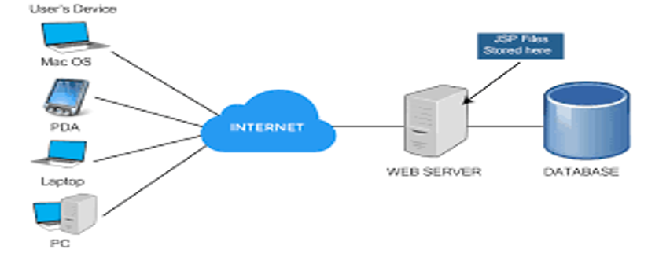

We discuss in this Report Some of the Important Points You Should know as Web Developer or just a simple Developer.
Stay tuned for more updates!
It was the first wide-area packet-switched network with distributed control and one of the first computer networks to implement the TCP/IP protocol suite.[1]
In 1966, Bob Tylor launched the ARPANET project to allow distant computers to share resources
The ARPANET was established by the Advanced Research Projects Agency (ARPA) of the United States Department of Defense 1969.[1]
The goal of ARPA was to finance cutting-edge research. Rather than being designed with users in mind, the ARPANET was a communications-oriented research initiative. However, the Defence Communications Agency took over the operational administration of the ARPANET in the summer of 1975.The first ARPANET encryption devices were put into service to support secret traffic about this time.[1]
The technological advancements and practical applications achieved through the ARPANET were instrumental in shaping modern computer networking including the internet. Development and implementation of the concepts of packet switching, decentralized communication, and the development of protocols like TCP/IP laid the foundation for a global network that revolutionized communication, information sharing and collaborative research across the world.[1]
Several institutions received funding from the NSF in 1985 to construct national supercomputing centers, and in 1986, the NSFNET initiative offered network connectivity and access. Universities and government organizationsstarted using NSFNET as their Internet backbone.[1]
In 1990, the ARPANET project was formally discontinued. As the ARPANET was shut down following the advent of the NSFNet, the initial IMPs and TIPs were phased away, however, some IMPs were still in use as late as July 1990.[1]
The Internet is a global network of computers connected to each other which communicate through a standardized set of protocols.[2]
The United States Department of Defense created the Internet in the late 1960s to create a decentralised communication network that would be resistant to a nuclear attack. However, billions of people use the internet today to obtain information, contact with friends and family, conduct business, and much more. It is become a necessary component of modern life. [3]
At a high level, the internet works by connecting devices and computer systems together using a set of standardized protocols. These protocols define how information is exchanged between devices and ensure that data is transmitted reliably and securely.[4]
The global network of linked routers that makes up the internet's core is in charge of guiding traffic between various systems and devices. Data is delivered from your device to a router via tiny packets when it is sent over the internet. After reviewing the packet, the router sends it on to the following router along the route to its destination. This procedure keeps going until the packet gets to its intended location.[4]
The internet uses a number of protocols, such as the Transmission Control Protocol (TCP) and the Internet Protocol (IP), to guarantee that packets are sent and received correctly. TCP makes sure that packets are transmitted consistently and in the right order, whereas IP handles packet routing to the appropriate location.[4]
is a group of websites or web pages that are linked to local computers over the internet and kept on web servers. These websites have text sections, digital photos, audio files, movies, and more. Users can use their computers, laptops, cell phones, and other internet-connected devices to access the content of these sites from anywhere in the world. Text and media can be retrieved and displayed on your device via the internet and WWW.[5]
The building blocks of the Web are web pages which are formatted in HTML and connected by links called "hypertext" or hyperlinks and accessed by HTTP. These links are electronic connections that link related pieces of information so that users can access the desired information quickly. Hypertext offers the advantage to select a word or phrase from text and thus to access other pages that provide additional information related to that word or phrase.[5]
A web client is a client-side application used for connecting to a web server over HTTP. It is typically a Web browseror web app which displays web pages received from the server and allows users to interact with the web server.[6]
Web Servers are systems that are connected to the internet and store web pages. In addition it sends out requested data over the web using HTTP. In nutshell, like Apache– the Web Servers are just like libraries for web pages. They store, process and deliver the web resources to the client software.[6]
Servers can also use other data transfer protocols such as SMTP and FTP. Mail servers use SMTP for transferring emails from one user to another. Additionally FTP server is used for high speed file transfer operations.[6]
In summary, the web servers are what power the internet. It receives requests for resources from the user's client, saves information, and processes data. The server's housed data is essential because the internet wouldn't function without it.[6]
When you search for a website, you type its URL in the browser. The browser then translates the web address to its IP. An IP address is a unique number that identifies devices on the internet. This information is stored on DNS nameservers. The browser queries the DNS database for the IP address of your URL and retrieves it.[6]
Once the IP address is found, your web client sends an HTTP request to the server’s IP address. The server receives the request and sends an HTTP “200 OK” response if everything goes well. Then it sends the requested information or data in small chunks called packets. Once the packets reach your network, the router forwards them to your device.[6]
Communication within network environments is crucial for the seamless exchange of data, information, and resources across various interconnected devices and systems. Establishing robust communication protocols and frameworks is essential to ensure reliability, efficiency, and security in network operations. This report provides a concise overview of key considerations and strategies for establishing effective communication in network environments.[7]
network Design and Architecture: Thoughtful network design and architecture are critical for optimizing communication performance and efficiency. Factors such as topology, routing protocols, and bandwidth management should be carefully considered to meet the specific requirements of the network environment.[7]
Quality of Service (QoS): Implementing QoS mechanisms allows network administrators to prioritize traffic based on factors such as bandwidth, latency, and packet loss, ensuring optimal performance for critical applications and services.[7]
Monitoring and Management: Continuous monitoring and management of network performance, traffic patterns, and security threats are essential for proactive identification and resolution of issues that may impact communication effectiveness.[7]
Regular Updates and Maintenance: Regular software updates, patches, and maintenance activities help ensure that network infrastructure and communication protocols remain up-to-date and resilient against emerging threats and vulnerabilities.[[7]
Two or more computers connected by wired (cables) or wireless (Wi-Fi) networks are called a computer network because they are meant to transfer, exchange, or share resources and data. Hardware (such as switches, routers, access points, and cables) and software (such as operating systems or business apps) are used to establish a computer network.[8]
Computer networks connect nodes like computers, routers, and switches using cables, fiber optics, or wireless signals. These connections allow devices in a network to communicate and share information and resources.[8]
The Domain Name System (DNS) is the phonebook of the Internet. Humans access information online through domain name, like nytimes.com or espn.com. Web browsers interact through Internet Protocol(IP) addresses. DNS translates domain names to IP address so browsers can load Internet resources.[9]
The Domain Name System (DNS) is the phonebook of the Internet. Humans access information online through domain name, like nytimes.com or espn.com. Web browsers interact through Internet Protocol(IP) addresses. DNS translates domain names to IP address so browsers can load Internet resources.[9]
DNS resolution is the process of translating a hostname, such www.example.com, into an IP address that is understandable by computers, like 192.168.1.1. Every Internet-connected device has an IP address, which is required to identify the correct device, much like a street address is needed to identify a certain residence. The text that a user types into their web browser (example.com) and the machine-friendly address required to find the example.com webpage must be translated when a user wishes to load a webpage.[9]
In order to understand the process behind the DNS resolution, it’s important to learn about the different hardware components a DNS query must pass between. For the web browser, the DNS lookup occurs "behind the scenes" and requires no interaction from the user’s computer apart from the initial request.[9]
A URL (Uniform Resource Locator) is a unique identifier used to locate a resource on the Internet. It is also referred to as a web address. URLs consist of multiple parts including a protocol and domain name that tell a web browser how and where to retrieve a resource.[10]
End users use URLs by typing them directly into the address bar of a browser or by clicking a hyperlink found on a webpage, bookmark list, in an email or from another application.[10]